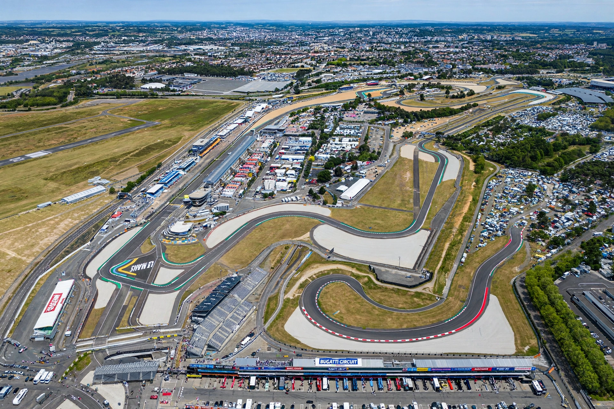

 The Bugatti Circuit, Le Mans | |
| Location | Le Mans, Sarthe, France |
|---|---|
| Opened | 1965 |
| Length | 4.185 km (2.600 mi) |
| Turns | 14 |
| Major events | MotoGP French motorcycle Grand Prix; French Grand Prix (1967) |
The Bugatti Circuit is a permanent motor racing circuit at Le Mans, France, located within the grounds of the Circuit de la Sarthe, home of the 24 Hours of Le Mans. Named for automobile designer Ettore Bugatti, the 4.185 km (2.600 mi) circuit uses part of the Sarthe road course's pit straight and infield sections constructed in 1965.
The circuit was built in 1965 for shorter races unsuited to the full 13.6 km Sarthe circuit. It hosted the Formula One French Grand Prix once, in 1967, won by Jack Brabham. Since then its principal role has been motorcycle racing: the French motorcycle Grand Prix, a round of the MotoGP world championship, has been held there almost continuously since 1969, and the circuit also hosts the 24 Hours of Le Mans motorcycle endurance race.
The Bugatti Circuit shares the Sarthe circuit's main straight, pits, and Dunlop Bridge sequence before turning infield through a series of tighter corners, including the La Chapelle and Le Musée bends, and rejoining the main course near the Ford Chicane. Its facilities include the pit complex and grandstands of the 24 Hours circuit.